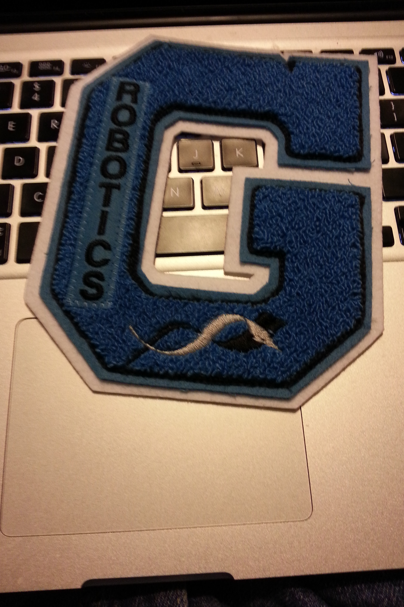

Here are a few of the awards I've gotten over the years.
- Finished 43rd in Math Division at Vex World's in 2014 season.
- Finished 13th in FTC robotics at state in 2013
- Earned Varsity letter for Robotics in 2014
- Became GSMST TSA historian and On Demand Team Leader in 2014
- Won 9th place for On Demand Video at TSA State Leadership Conference last year
- Won 10th place for Digital Video Production at TSA State Leadership Conference last year
- Finished as a Semifinalist for Animatronics at TSA State Leadership Conference last year
- Worked at NCR over the last summer as a web developer, helped with the Madcap division.
